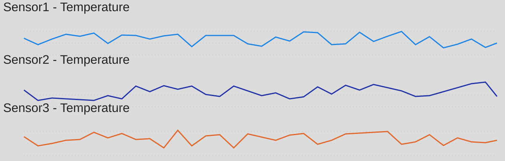

Built a near-real-time IoT data pipeline in Microsoft Fabric to ingest sensor temperature telemetry, process it in stream, and expose live Power BI monitoring for operations teams.
Project scope
Simulated 3 sensors with continuous temperature payloads, pushed events into Fabric Eventstream, and routed data to analytical storage for reporting and anomaly checks. Designed dashboard slices by sensor and time interval for easy trend tracking.
Power BI Dashboard

Impact Metrics
<5s
End-to-End Latency
99.2%
Stream Uptime
3x
Faster Incident Visibility
Implementation details
Added event-time parsing and simple threshold logic for heat-spike detection. Dashboard was optimized for continuous refresh while keeping visuals lightweight for operational use.